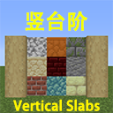
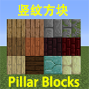

挼の原版模组合集
下载后, 将资源包放入resourcepacks文件夹并在选项/资源包中选择相应资源包, 数据包放入datapacks文件夹并重载即可.
竖台阶
- Minecraft 1.9-1.14
- 竖台阶资源包 v1(1.9-1.14)
修改14种墙的模型和材质为竖台阶。

竖纹方块
- Minecraft 1.9-1.14
- 竖纹方块资源包 v1(1.9-1.14)
修改6种木板和7种砖对应的双台阶的材质为南北走向而非默认的东西走向。

更多的合成
- Minecraft 1.13.1-1.14
- 更多的合成(资源包+数据包) v1(1.13.1-1.13.2) | v2(1.14)
空域开端
- Minecraft 1.14
- 空域开端数据包 v2(1.14)
用于空岛生存.
更多的交易

- Minecraft 1.14
- 更多的交易数据包+资源包 v2(1.14)
添加了新的村民交易.
箱子排序

- Minecraft 1.14
- 箱子排序数据包 v2(1.14)
当玩家主手/副手持有木棍右击箱子/潜影箱后，箱子内的物品会按照物品id的长度/物品数量从小到大排序。该操作不会合并同名的物品。
生物强化

- Minecraft 1.14
- 生物强化数据包 v2(1.14)
- 僵尸/凋零骷髅：有更高的几率生成时身穿盔甲、手持武器。
- 骷髅：有更高的几率生成时身穿盔甲、射出药箭。
- 爬行者：爆炸前的引线时间更短。高压爬行者有一定几率天然生成。
发射器种植

- Minecraft 1.13-1.14
- 发射器种植数据包 v2(1.14)
当发射器发射的物品可以种植在前方位置时，会自动种植。若同时安装了数据包 craftingpp，则支持 craftingpp 的树苗和花草。
贪婪的村民

- Minecraft 1.13-1.14
- 贪婪的村民数据包 v2(1.14)
村民可被附近手持绿宝石块的玩家吸引。
下界干燥湿海绵

- Minecraft 1.13-1.14
- 下界干燥湿海绵数据包 v2(1.14)
放置在下界的湿海绵会被干燥。
末影龙掉落龙蛋

- Minecraft 1.14
- 末影龙掉落龙蛋数据包 v2(1.14)
末影龙死亡后，会在传送门上方生成龙蛋。